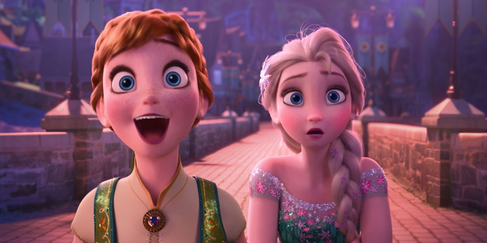

|
|
|
Mainpage
Movies
About Us
Contact Us
|
Walt Disney Animation Studios

|
Our Studio
You can design and create, and build the most wonderful place in the world.
But it takes people to make the dream a reality." - Walt Disney
Combining masterful artistry and storytelling with groundbreaking technology, Walt Disney Animation Studios is a filmmaker-driven animation studio responsible
for creating some of the most beloved films ever made. Located in Burbank, WDAS continues to build on its rich legacy of innovation and creativity, stretching
from the first fully-animated feature film, 1937's Snow White and the Seven Dwarfs, to 2013's Academy Award®-winning Frozen, the biggest animated film of all time.
Among the studio's timeless creations are Cinderella, Sleeping Beauty, The Jungle Book, Beauty and the Beast, The Lion King, Tangled, Wreck-It Ralph, Big Hero 6,
Zootopia, and the upcoming feature Moana..
Here at Walt Disney Animation Studios, employees continually enhance their development, learning, and creative growth through a wide variety of classes, from
custome drawing instruction by our own artists, to seminars on film making techniques by masters of the craft, to technological demonstrations from in-house experts.
Maintaining a work-life balance is important and we’ve created an environment that reflects that philosophy. In short, our people make our films great, and
we strive to build a culture that feeds and respects the creative spirit.
|